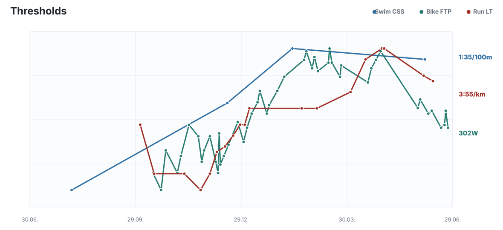
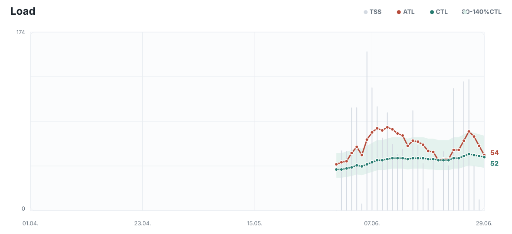
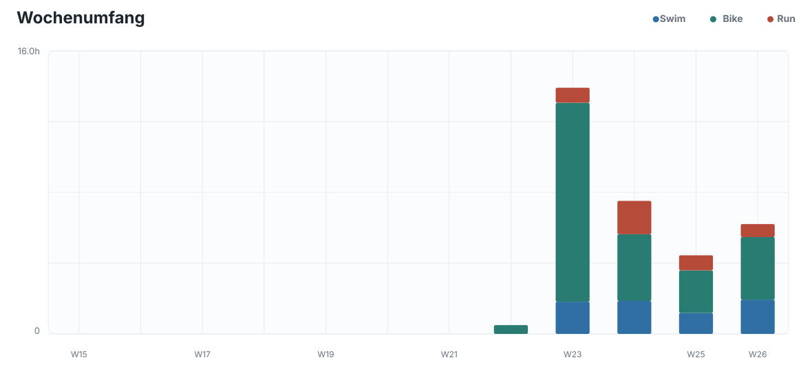
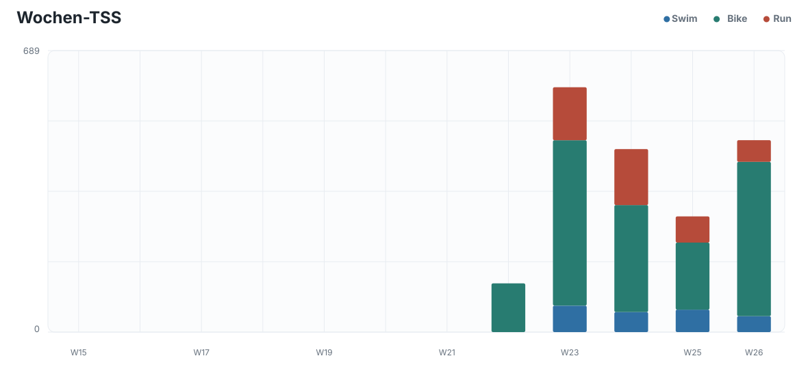
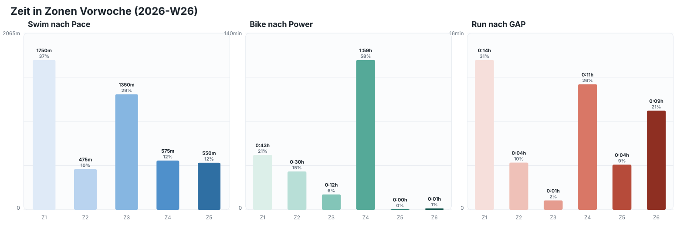
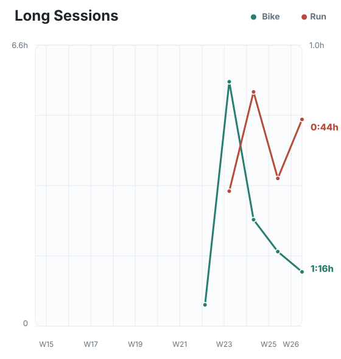
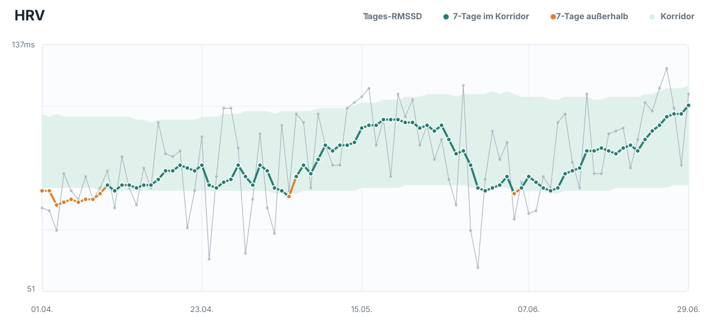
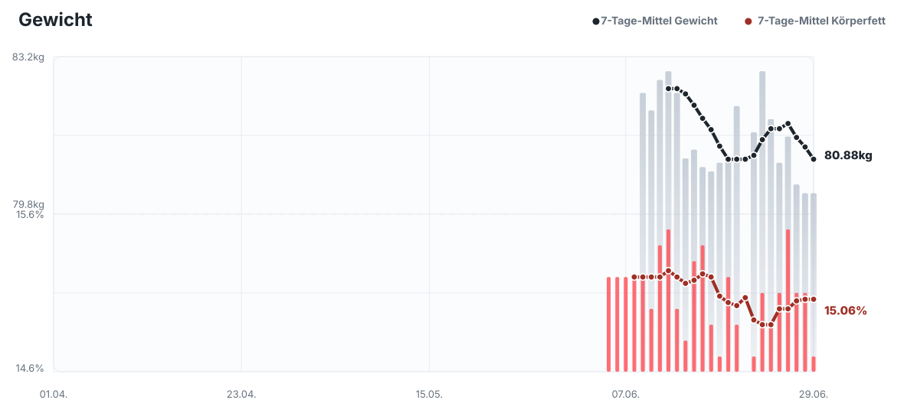
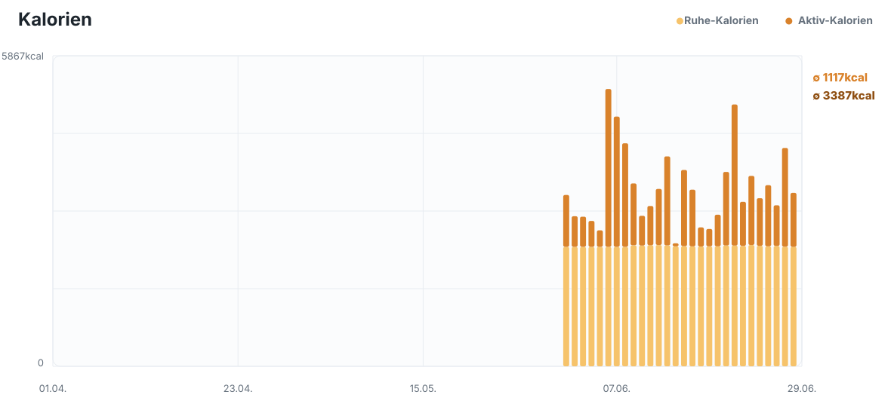

Mo 2026-06-29
Threshold
- 5min @203W
- 3x16min @300W,2x4min @100W
- 2min @100W
2026-06-29 bis 2026-07-05
W26 war trainingslogisch keine normale Aufbauwoche, sondern die erste Hälfte eines bewusst kurzen MIT-Blocks nach dem Rothsee Triathlon. Der Wochencharakter war klar Bike-dominant: drei sauber ausgeführte Threshold-Bike-Einheiten, ein harter Threshold-Run, zwei Schwimmeinheiten und keine klassischen Long Sessions. Gegenüber einer Standardwoche mit Long Bike und Long Run war dieser Block wahrscheinlich sinnvoller, weil er sehr viel spezifische Schwellenzeit erzeugt hat, ohne die systemische Dauerermüdung zu setzen, die Long Sessions aktuell subjektiv stärker auslösen. Die Bike-Einheiten waren dabei der stärkste Teil: 5x8min, 3x12min und 2x20min wurden jeweils stabil um 299W gefahren, mit moderaten bis kontrolliert ansteigenden Herzfrequenzen. Der rechnerische Bike-Load wirkt hoch und sollte konservativ interpretiert werden, aber der physiologische Kernbefund bleibt belastbar: Die Schwellenleistung war wiederholt abrufbar und wurde nicht durch auffällige Herzfrequenzreaktionen limitiert.
Der Laufreiz am 2026-06-24 war qualitativ stark, aber deutlich schärfer als ein kontrollierter Threshold-Run auf dem Papier: Die schnellen Abschnitte lagen GAP-basiert häufig um 3:37-3:51/km und damit teilweise näher an VO2max/oberem Threshold als an ruhiger Schwelle. Das ist als einzelner Reiz in dieser Woche vertretbar, sollte aber wegen orthopädischem Risiko und der Vorgeschichte mit dem linken Knie nicht ungebremst fortgeschrieben werden. Die Schwimmeinheiten passten als ergänzende Reize gut in den Block, wobei die CSS-basierten Vorgaben weiterhin mit Vorsicht zu lesen sind und die Schwimmleistung nicht der Hauptlimitierer für die kurzfristige MIT-Entscheidung ist. Das Canyoning-Wochenende zählt nicht als strukturiertes Triathlontraining, war aber mit Zustiegen, Schritten, Aktivkalorien und teils hoher Herzfrequenz zusätzliche Outdoor-Belastung, besonders am 2026-06-27. Dadurch war das Wochenende nicht völlig belastungsfrei, aber es hat die Sportarten-spezifische Ermüdung trotzdem deutlich geringer gehalten als ein klassisches Long-Bike-/Long-Run-Wochenende.
Die Health-Daten sprechen gegen eine übermäßige Belastungsreaktion und eher für gute Verarbeitung: HRV stieg bis 2026-06-29 auf 120ms, der 7-Tage-Wert lag mit 116ms im Korridor, Ruhepuls blieb niedrig bei 37-41bpm und der Schlaf war nach Dauer und Score überwiegend gut. Der Load-Status ist nach dem Wochenende ebenfalls kontrolliert: Am 2026-06-29 liegen ATL 54, CTL 52, TSB -2 und ACR 1.044 vor, also keine klare Warnlage. Damit wirkt der erste MIT-Teil im Vergleich zu einer normalen Standardwoche mit Long Sessions effektiv: mehr spezifischer Schwellenreiz, weniger lang anhaltender subjektiver Stress und keine erkennbare negative Readiness-Reaktion. Für die Ziele ist das kurzfristig sinnvoll, weil bis zu den nächsten priorisierten Rennen noch genug Zeit für Grundlagenarbeit bleibt, während die aktuelle Phase genutzt werden kann, um die Schwellenleistung auf Bike und Run kompakt zu schärfen. Die zweite MIT-Blockhälfte in W27 ist deshalb empfehlenswert, aber nur als klar begrenzter Block von 2026-06-29 bis maximal 2026-07-02, danach sollte keine zusätzliche strukturierte Belastung erzwungen werden. Die nächste Woche darf härter als die Standardwoche sein, sollte aber weiterhin bewusst ohne Long Sessions geplant werden, weil genau diese aktuell den höheren systemischen Preis haben.











